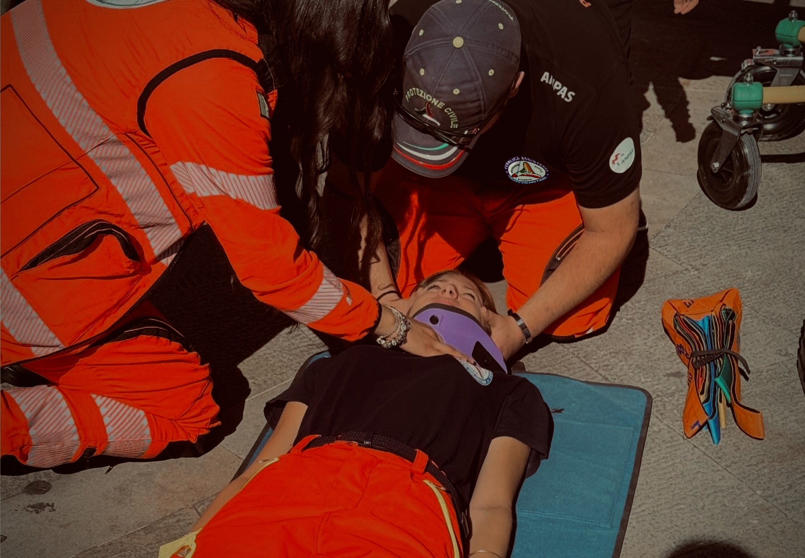
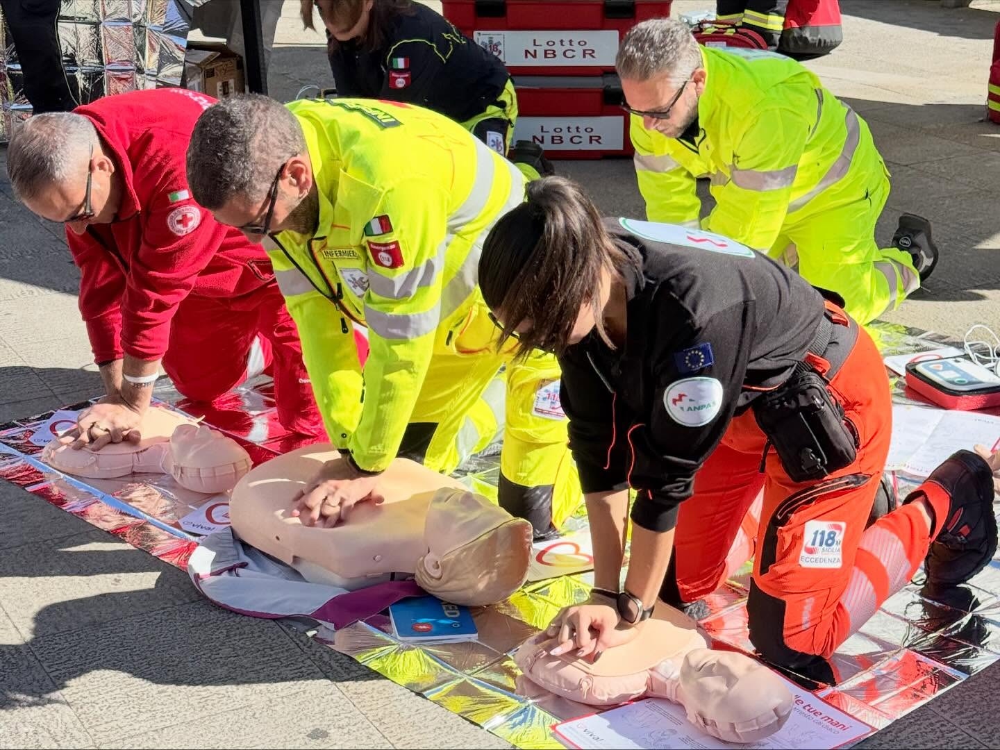

Area Sanitaria
Soccorso sanitario, trasporto infermi e presidio costante a tutela della salute pubblica.
Servizi Sanitari
Servizio dedicato al trasporto infermi, dimissioni ospedaliere(anche protette) trasferimenti a lungo raggio, trasferimenti Inter-ospedialeri, visite e DayHospital.Gestione logistica con ambulanze, allestite con apparecchiature elettromedicali avanzate.
Assistenza Eventi e Primo Soccorso
Copertura sanitaria per manifestazioni sportive, raduni, eventi culturali e religiosi. Configurazione di squadre a piedate abilitate e posizionamento strategico dei mezzi di soccorso.
La Professionalità sul Campo: Il Valore dell'Addestramento
La professionalità sul campo non si improvvisa, si costruisce giorno dopo giorno con un addestramento costante e mirato. I nostri volontari affrontano percorsi di certificazione estremamente rigidi, pensati per garantire la massima prontezza, competenza e lucidità in ogni situazione di emergenza.
La nostra associazione forma i propri volontari che vogliono svolgere attività sanitaria come autista soccorritore con i corsi specifici:
- O.T.S.S.A.: Operatore per il Trasporto Sanitario Secondario in Ambulanza (Soccorritore di I livello).
- O.T.S.E.A.: Operatore per il Trasporto Sanitario in Emergenza in Ambulanza (Soccorritore di II livello).
Non si tratta di semplici lezioni, ma di veri e propri percorsi teorico-pratici che si completano con un periodo di tirocinio sul campo.
La nostra formazione prepara figure altamente specializzate. È motivo di grande orgoglio e garanzia di qualità sottolineare che i nostri corsi sanitari sono ufficialmente rilasciati dal centro di formazione di Anpas Sicilia ai sensi del D.A. Regione Siciliana n. 1961 del 29 Ottobre 2018.

Il Corso Full-D: Sicurezza alla Portata di Tutti
Saper intervenire in un'emergenza può fare la differenza tra la vita e la morte. Per questo il nostro corso Full-D, include il corso BLS-D (Basic Life Support and Defibrillation) e PBLS-D (Pediatric Basic Life Support and Defibrillation), disponibile a volontari che non svolgono attività sanitarie ed è aperto a tutti i cittadini.
Le emergenze accadono tutti i giorni in casa, per strada o sul posto di lavoro. Che tu sia un genitore, un insegnante o un semplice cittadino, questo corso teorico-pratico ti darà gli strumenti fondamentali per:
- Riconoscere subito un'emergenza cardiaca.
- Allertare correttamente i soccorsi.
- Intervenire in totale sicurezza nei primissimi minuti.
Un cittadino perfettamente formato può salvare una vita. Il primo passo per attivare la catena del soccorso sei tu. Preparati insieme a noi per fare la differenza!
